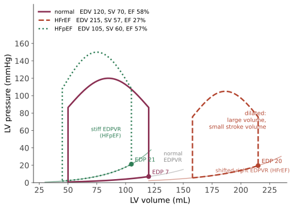

本页目录
系统 I · 心血管：从斑块到心衰
本页把线二的四组过程（细胞损伤、炎症、血流动力学、增殖）用在一个器官上，走完一条完整的因果链：内皮功能障碍 → 粥样斑块 → 破裂 → 血栓 → 心肌坏死 → 重构 → 心衰。这条链是全球第一位死因的机制骨架。
1. 动脉粥样硬化：一种慢性炎症
旧模型（脂质沉积的被动过程）已被"损伤反应/慢性炎症"模型取代。步骤：
- 内皮功能障碍（低剪切应力的分叉处最易受累——这解释了斑块的解剖分布；加上高 LDL、吸烟、高血压、糖尿病、高同型半胱氨酸）→ 通透性升高、黏附分子表达；
- LDL 进入内膜并被氧化（ox-LDL 是关键的促炎与细胞毒物质）；
- 单核细胞进入 → 巨噬细胞 → 通过清道夫受体吞噬 ox-LDL → 泡沫细胞。注意：清道夫受体不受胆固醇负反馈调节 → 无限吞噬——这是脂纹形成的分子原因；
- 平滑肌细胞由中膜迁移至内膜并分泌基质 → 纤维帽；
- 斑块成熟：脂质核心 + 纤维帽 + 炎症细胞；新生血管化与钙化。
斑块的两种命运，决定两种临床表现：
| 稳定斑块 | 易损斑块 | |
|---|---|---|
| 纤维帽 | 厚 | 薄 |
| 脂核 | 小 | 大 |
| 炎症细胞 | 少 | 多（MMP 降解纤维帽） |
| 狭窄程度 | 常更重 | 常较轻 |
| 临床 | 稳定型心绞痛（劳力性） | 急性冠脉综合征 |
这一对比推翻了一个直觉：大多数心梗发生在狭窄不到 70% 的斑块上。原因是重度狭窄处已形成侧支且斑块常已稳定钙化，而中度狭窄的富脂斑块更易破裂。临床后果极重要：冠脉造影显示的"狭窄程度"并不能很好预测未来心梗位置，这也是为什么稳定性冠心病的支架治疗改善症状但未降低心梗与死亡（COURAGE、ISCHEMIA 试验 —— 🔗 姊妹站第 09 页详述）。
炎症假说的直接验证：CANTOS 试验（抗 IL-1β 单抗 canakinumab）在不改变血脂的情况下降低心血管事件——证明炎症本身是可干预的靶点，尽管因感染风险与成本未获批该适应证。秋水仙碱的低剂量试验也支持这条路径。
2. 心肌缺血与梗死
供需失衡：供给取决于冠脉血流（主要在舒张期！）× 血氧含量；需求取决于心率、心肌收缩力、室壁应力（Laplace）。
推论一：心动过速同时增加需求并缩短舒张期从而减少供给——双重打击。这就是 β 阻滞剂抗心绞痛的核心机制。 推论二：左室肥厚使心内膜下最易缺血（灌注距离最长、室壁应力最高）——心内膜下缺血是最早出现的（心电图上表现为 ST 压低）。
急性冠脉综合征的三分法：
| 病理 | 心电图 | 肌钙蛋白 | |
|---|---|---|---|
| 不稳定型心绞痛 | 斑块破裂 + 非闭塞性血栓 | ST 压低/T 倒置或正常 | 阴性 |
| NSTEMI | 同上，但已致坏死 | 同上 | 阳性 |
| STEMI | 完全闭塞（透壁缺血） | ST 抬高（新发 LBBB 等价） | 阳性 |
"时间就是心肌"的定量依据来自第 07 页的坏死时间线：心肌耐受完全缺血约 20–30 分钟开始不可逆损伤，坏死自心内膜下向心外膜推进（波峰前沿现象），约 6 小时完成透壁。这决定了再灌注治疗的时间窗，以及为什么 STEMI 要绕过一切流程直送导管室。
肌钙蛋白的读法：高敏肌钙蛋白升高 = 心肌损伤，不等于心梗。心梗需要缺血证据 + 动态变化。其他升高原因：心衰、心肌炎、肺栓塞、脓毒症、慢性肾病（清除下降）、剧烈运动。🔗 姊妹站第 10 页把这条做成一整页的贝叶斯练习。
3. 心肌梗死后的重构
这是"代偿变成疾病"的最佳范例（第 00 页的四问之三）：
急性期：坏死区变薄扩张（梗死延展）→ 室壁应力升高。 神经内分泌激活：CO 下降 → 交感 + RAAS 激活 → 短期维持血压与灌注，长期：后负荷增加、心肌耗氧增加、Ang II 与醛固酮直接促心肌肥厚与纤维化、儿茶酚胺致心肌细胞凋亡与心律失常。 结果：心室由椭圆变球形、进行性扩张、二尖瓣环扩张致功能性反流 → 进一步容量负荷 → 恶性循环。
这条机制链直接解释了现代心衰治疗的全部逻辑：不是"强心"，而是"阻断神经内分泌激活"。ACEI/ARB/ARNI、β 阻滞剂、醛固酮拮抗剂、SGLT2 抑制剂这四类（"四大支柱"）都降低死亡率；而正性肌力药（多巴酚丁胺、米力农）改善症状却增加长期死亡率——因为它们顺着而不是逆着这条恶性循环。这是本站最重要的机制-治疗对应之一。
4. 心衰：两种病理生理，一个综合征

| HFrEF（EF ≤ 40%） | HFpEF（EF ≥ 50%） | |
|---|---|---|
| 核心缺陷 | 收缩力下降 | 舒张期僵硬 / 充盈受限 |
| 典型病因 | 心梗后、扩张型心肌病、长期瓣膜病 | 高血压、老龄、肥胖、糖尿病、房颤 |
| 心室 | 扩张、变薄 | 肥厚、腔小 |
| 治疗 | 四大支柱证据充分 | 长期无有效药物；SGLT2 抑制剂是首个明确有效者（EMPEROR-Preserved、DELIVER） |
症状的机制对应：左心衰 → 肺淤血（呼吸困难、端坐呼吸、夜间阵发性呼吸困难——平卧时下肢液体回流增加前负荷）；右心衰 → 体循环淤血（颈静脉怒张、肝大、下肢水肿）。最常见的右心衰病因是左心衰。
利钠肽（BNP/NT-proBNP）由心室壁张力增加时分泌 → 高敏感性、阴性预测值高 → 适合"排除"心衰；但假阳性多（房颤、肾功能不全、高龄），且肥胖者水平偏低可致假阴性。🔗 姊妹站第 11 页用它讲"排除性检验"的正确用法。
5. 高血压
约 90–95% 为原发性（多基因 + 环境：钠摄入、肥胖、酒精、久坐、睡眠呼吸暂停）。核心机制：肾脏钠水处理的压力-利钠曲线右移（Guyton 的论点：长期血压由肾决定）+ 交感与 RAAS 活性 + 血管重构（中膜增厚使阻力升高并进一步固化高压）。
继发性高血压的线索（值得记，因为可治愈）：原发性醛固酮增多症（比传统认为的常见得多，低钾并非必备）、肾动脉狭窄（年轻女性纤维肌性发育不良 / 老年动脉粥样硬化；ACEI 后肌酐骤升是线索）、嗜铬细胞瘤（阵发性头痛心悸出汗）、库欣、甲状腺疾病、阻塞性睡眠呼吸暂停、主动脉缩窄（上肢高血压 + 股动脉搏动延迟减弱）、药物（NSAIDs、口服避孕药、糖皮质激素、拟交感药）。
靶器官损害：脑（卒中、腔隙性梗死、血管性认知障碍）、心（左室肥厚 → HFpEF、房颤、冠心病）、肾（高血压肾硬化）、眼底（视网膜病变分级）、大血管（主动脉夹层、动脉瘤）。
恶性高血压的病理形态是纤维素样坏死与洋葱皮样小动脉硬化（第 05、07 页），伴视乳头水肿、急性肾损伤、脑病——属于急症。
6. 心脏瓣膜病与心肌病（要点）
| 病变 | 机制 | 特征 |
|---|---|---|
| 主动脉瓣狭窄 | 老年钙化性（与动脉粥样硬化过程相似）、二叶瓣、风湿 | 收缩期喷射性杂音向颈部传导；三联征：心绞痛、晕厥、心衰；压力超负荷 → 向心性肥厚 |
| 二尖瓣反流 | 黏液样变性、缺血致乳头肌功能障碍、心室扩张 | 容量超负荷 → 离心性肥厚 |
| 二尖瓣狭窄 | 几乎均为风湿性 | 左房扩大 → 房颤 + 血栓栓塞；肺淤血 |
| 感染性心内膜炎 | 瓣膜赘生物 | 急性（金葡菌）vs 亚急性（草绿色链球菌）；Duke 标准；栓塞现象（Janeway 斑、Osler 结节、Roth 斑） |
心肌病三型：扩张型（收缩功能↓；病因：特发性、酒精、心肌炎后、化疗药、围产期、遗传）；肥厚型（肌小节蛋白突变、常染色体显性；非对称室间隔肥厚 + 左室流出道梗阻；年轻运动员猝死的主要原因之一；注意：减轻前负荷的动作如 Valsalva 使杂音增强）；限制型（浸润：淀粉样变、结节病、血色病）。
关于"压力超负荷 → 向心性肥厚、容量超负荷 → 离心性肥厚"：这一对来自 Laplace 定律的直接推导（第 04 页）——压力升高需增加壁厚以降低壁应力；容量升高则半径增大、壁厚同比增加以维持比例。能推出来的东西不必背。
7. 心律失常的机制三分
① 自律性异常（缺血、电解质、儿茶酚胺）；② 触发活动（早后除极 EAD——长 QT 与尖端扭转；迟后除极 DAD——钙超载，如地高辛中毒）；③ 折返（最常见）——需要三个条件：两条通路、单向阻滞、传导足够慢。
房颤：机制为肺静脉肌袖异位灶 + 心房基质重构（"房颤本身促进房颤"——电重构与结构重构）。风险不在心律本身而在血栓栓塞与心衰。CHA₂DS₂-VASc 不是单独“决定抗凝”的开关：应按适用指南、地区和经验证的年卒中/体循环栓塞风险，结合出血风险、合并症、患者偏好与房颤负荷共同决策，并定期复评。ESC 2024（欧洲）指南使用去掉性别项的 CHA₂DS₂-VA：1 分应考虑抗凝，≥2 分推荐抗凝；美国 2023 ACC/AHA/ACCP/HRS 指南按年血栓栓塞风险作推荐，可使用 CHA₂DS₂-VASc 等经验证评分，中间风险还可结合其他风险修饰因素和共享决策。机械瓣、风湿性二尖瓣狭窄等特殊情形需遵循专门建议；年龄、血压、心衰、糖尿病、血管病、肾功能、出血风险、房颤负荷或患者偏好改变时，应动态复评。🔗 姊妹站第 15 页用风险与 NNT 说明为什么不能把评分当成自动处方。心率控制 vs 节律控制的长期结局在多数患者中相近（AFFIRM），但早期节律控制策略在近年试验中显示获益（EAST-AFNET 4）——指南据此更新，是"证据推动实践变化"的近例。
参考与更新
- 最后审查：2026-08-02。 本节来源用于核验冠状动脉疾病、心肌梗死、心衰、瓣膜病、房颤和抗凝决策的框架；抗栓与节律管理必须按患者所在地区的最新版指南执行。
- 2024 ESC Guidelines for the management of atrial fibrillation — ESC，2024：AF-CARE、CHA₂DS₂-VA 与动态复评。
- 2023 ACC/AHA/ACCP/HRS Guideline for the Diagnosis and Management of Atrial Fibrillation — 美国 ACC/AHA/ACCP/HRS，2023：按年血栓栓塞风险、共享决策与周期性复评。
- 2022 AHA/ACC/HFSA Guideline for the Management of Heart Failure — AHA/ACC/HFSA，2022：心衰分期与药物治疗。
- Fourth Universal Definition of Myocardial Infarction — ESC/ACC/AHA/WHF，2018：心肌损伤与心肌梗死的定义。
下一页：呼吸系统——阻塞、限制与气体交换的失败。